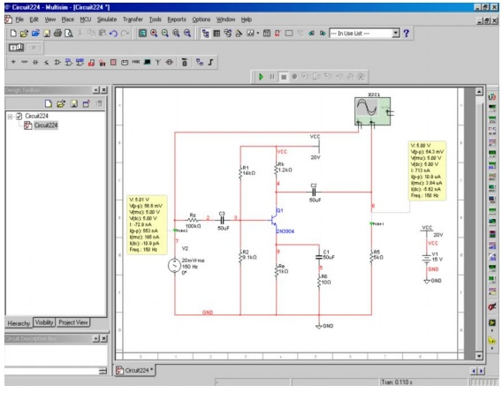
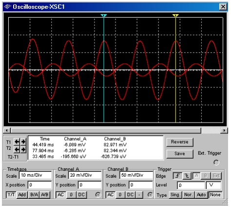
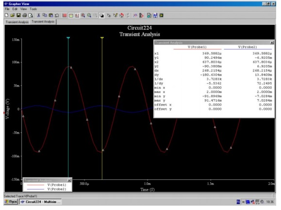
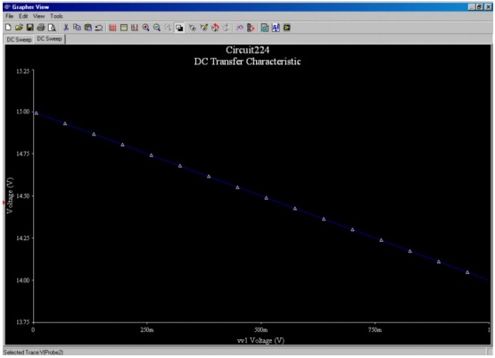
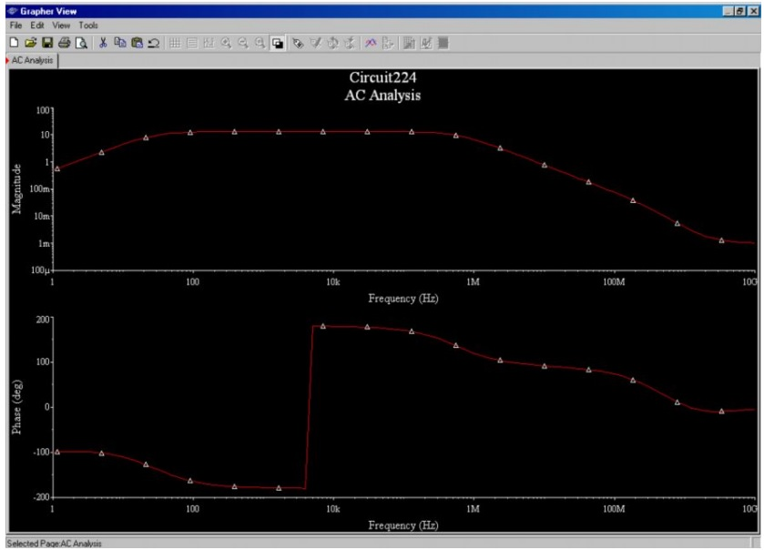

4.4. Сызбаларды модельдеу мысалы
Ақпараттық модельдеу келесі мақсаттарда қолданылады:
- материалдық объектілердің ұсынымдары (сипаттама);
- белгілі фактілерді түсіндіру;
- гипотизаларды құру;
- зерттелген объектілер туралы жаңа білім алу;
- болжау;
- басқару.
Әртүрлі ғылымдар объектілер мен процестерді түрлі көзқарастардан зерттеп, түрлі модельдерді құрастырады. Адамзатты мысалға келтірейік: әртүрлі ғылымдарда ол түрлі үлгілер шеңберінде зерттеледі. Механиканың шеңберінде оны химиялық тұрғыда - материал ретінде қарастыруға болады, әртүрлі химиялық заттардан тұратын объект ретінде, биологияда - өзін-өзі сақтауға ұмтылған жүйе және тағы басқалар.
Сол нысан көптеген үлгілерге ие болуы мүмкін және әртүрлі нысандарды бір модель арқылы сипаттауға болады.
Ақпараттық модельдердің түрлері
Ақпараттық модельдер жүйенің элементтері арасындағы өзара әрекеттесудің және өзара әрекеттесудің әртүрлі құрылымдары болатын объектілердің әр түрлі жүйелерін көрсетеді.
Қазіргі уақытта ақпараттық модельдерді ұсынудың келесі формалары бар: сипаттамасы; кесте; графика (ағаш, желі, блок-сұлба); суреттер; формула; сызбалар; сұлба.
1. Сипаттама
Табиғи тілдер ауызша, мәтіндік, сипаттамалы модельдерді құру үшін қолданылады.
Сызбалық модельдер иллюстрацияларды қолданумен ауызша және жазбаша сипаттама болып табылады.
Ауызша модельдер өмірде кездесетін жағдайларды, оқиғаларды, оларды түсіну және тәжірибені пайдалану мақсатында сипаттайды.
Мысалы, кез-келген технологиялық процестің сипаттамасы ақпараттық сипаттама үлгісі болып табылады.
Кез-келген модельдің құрылысы ауызша сипаттамадан басталады, себебі ол түпнұсқаны аз немесе азырақ көрсете алады. Вербальды модель жасау кезінде сөз тіркестерін нақты және анық түрде жасау, сонымен қатар негізгі ойларды бөліп көрсету, терминологияны дұрыс пайдалану және белгілі фактілерге сілтеме жасауға мүмкіндік береді.
Ақпараттық модельдер, соның ішінде сипаттама, адам шығармашылығының өнімі болып табылады. Компьютер негізінде интеллектуалды модельді сапалы жаңа деңгейде сигнал түріне аударуға мүмкіндік береді.
2. Кестелер
Ақпараттық модельдердің ең көп қолданылатын түрлерінің бірі - тікбұрышты кесте. Мұндай кестеде деректердің негізгі параметрлері қарастырылады.
Үлгінің бұл түрі бірдей қасиеттер жиынтығы бар бірқатар нысандарды сипаттау үшін қолданылады. Ол нысандар: объект; параметрлері; атауы; әрекеттері; мәні; ортасы.
Кесте үлгісі (кесте) - жолдар мен бағандардан тұрады.
Кестенің жоғарғы жолында әдетте баған тақырыптары бар. Жол мен бағанның қиылысы ұяшықты құрайды [19].
Мысалы, биполярлы транзисторы ортақ эмиттер тізбегімен қосылған күшейту каскадын қарастырайық. Уақытқа тәуелді шығыс және кіріс кернеулерінің графиктерін, статикалық сипаттамаларын, амплитудалық жиілігін және фазалық жиілікті сипаттамаларын жасаймыз.
1) MultiSim ортасында зерттелген сұлбаны жинайық (4.14-сурет).
Ескерту:
- Оның парметрлерін өзгерту үшін, элементті екі рет басу арқылы қосуға мүмкіндік береді.
- Пайдалану кезінде ыңғайлы болу үшін сымның түсін өзгертуге болады (сымның тінтуірдің оң жақ түймешегімен таңдаңыз және пайда болатын мәтін мәндік мәзірден түсті өзгерту белгісін таңдаңыз)

Сурет 4.14. Expressions available терезесі
2) Сұлба бойынша, осциллографтар уақытқа қарсы кіріс және шығыс кернеулерінің кестелерін автоматты түрде құрастырады (оларды көру үшін осциллографтың сол жақ батырмасын басыңыз).
Белсенді осциллографтар-XSC1 (4.15-сурет) терезесінде графиканы ординат пен абсцисс бойымен жылжытуға және кішірейтуге болады, графиктің әрбір нүктесінде параметрлерді көру үшін тінтуірді (меңзерді) қолданыңыз (мұнда кернеу мәні), осциллографтар деректерін мәтіндік файлдағы кесте ретінде Save батырмасы көмегімен сақтауға болады.
3) Transient Analysis көмегімен ұқсас кестелерді құру.
Плоттер түймесінің көмегімен меңзерлер мен деректердің көрінісінен кез келген уақытта кернеулердің мәнін көре аласыз. Графиктерді талдау барысында ыңғайлылық үшін түрлі түстерде көрсетіледі.
Transient Analysis терезесінде Output қойындысында талдауға қажетті мәндерді таңдап Analysis Parameters (4.16-сурет) қойындысында бастапқы және соңғы талдау уақытын орнатуға болады (сол әрекеттер кез келген талдау түрінде орындалады) [20].

Сурет 4.15. Параметрлер

Сурет 4.16. Analysis Parameters қойындысы
4) DC-Sweep талдау көмегімен трансформация сипаттамасын (кіріс кернеуінің кіруге тәуелділігі) құру. Платформадағы жұмыс (Grapher View) кестесі бойынша ұқсас (4.17-сурет).

Сурет 4.17. DC Transfer Characteristic платформасы
5) Жиілік реакциясының және фазалық реакцияның (AC-талдау көмегімен) құрылысы (4.18-сурет).

Сурет 4.18. Талдау құрылысы
Сұлбаны құру үшін компоненттерді таңдау кезінде іздеу мүмкіндіктері кеңейтілген. Компоненттерді таңдайтын терезесі ашылғаннан кейін Search түймесін басқаннан соң, суретте көрсетілгендей компоненттерді іздеу терезесі (Component Search) ашылады. Бұл терезеде іздеу жолы қосылған.
Кері